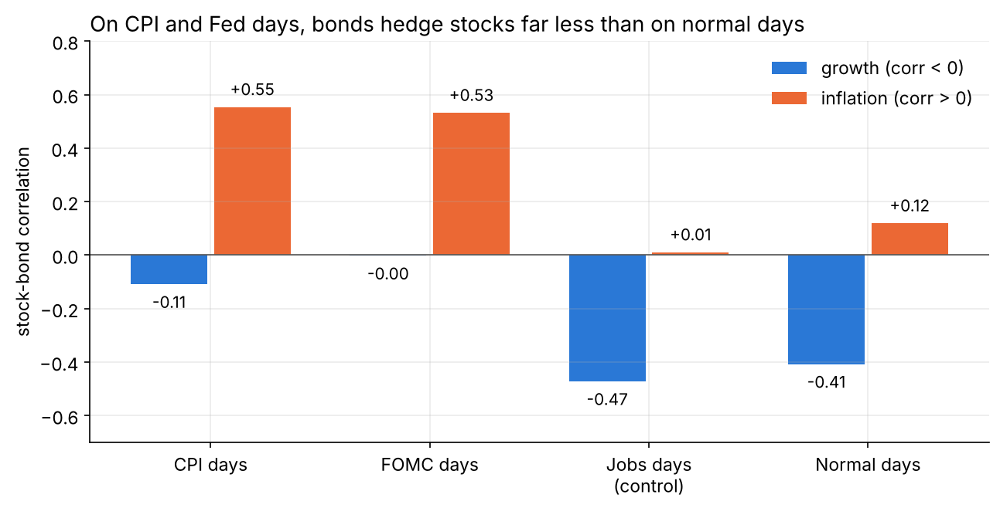
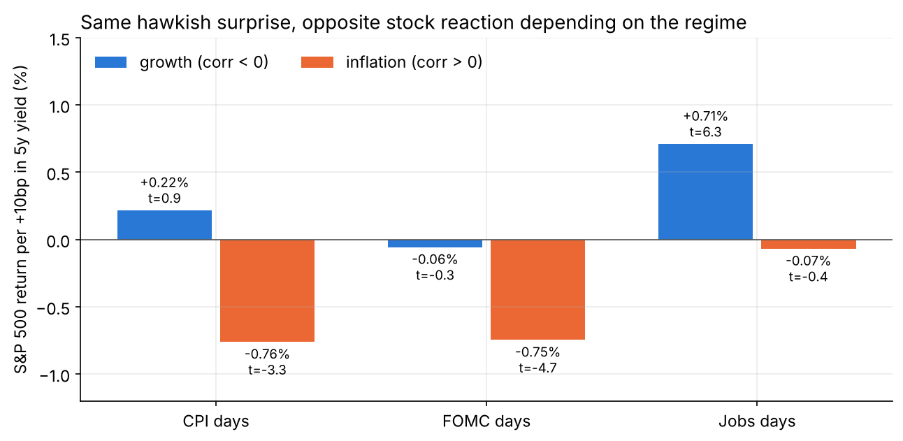
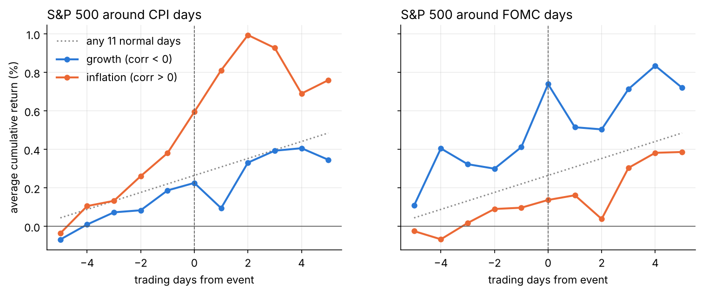
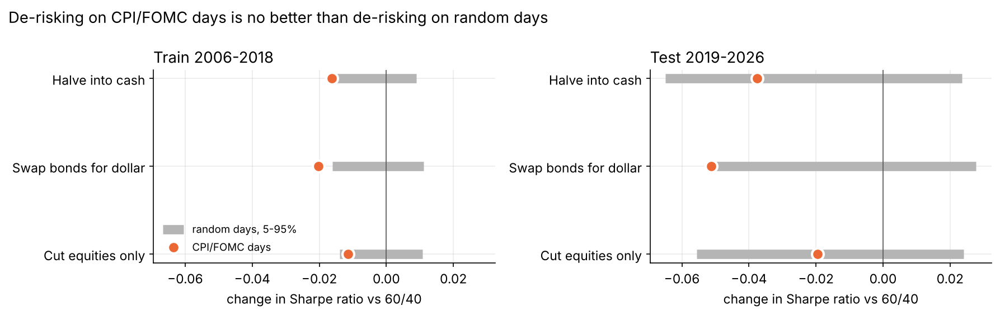

The question
For most of 2000 to 2020, stocks and bonds moved in opposite directions. Bad news was about growth: stocks fell and investors bought bonds, so a 60/40 portfolio hedged itself. In 2022 that broke. Inflation was the main risk, hot CPI prints sent both stocks and bonds down, and 60/40 had its worst year in decades.
This study tests whether that breakdown is concentrated on the days new inflation and policy information arrives, and whether an investor could position for it in advance.
Data and method
Daily data from February 2006 to October 2026: 5,203 trading days, with 247 CPI releases, 164 scheduled FOMC decisions, and 247 jobs reports as a control group.
| Piece | Choice |
|---|---|
| Assets | SPY (equities), IEF (7–10y Treasuries), DBC (commodities), GLD (gold), UUP (dollar), plus the 5y and 10y yields |
| Events | CPI releases and FOMC decisions, with dates from BLS via ALFRED and the Fed's meeting calendars |
| Control | Jobs reports: also big 8:30am releases, but about growth rather than inflation |
| Regime | Stock-bond correlation over the previous 63 trading days. Positive is the inflation regime, negative the growth regime. It uses only past data, so there's no look-ahead |
| Surprise | The event-day change in the 5-year yield, since free consensus forecasts don't exist |
| Significance | Luck tests against random normal days of the same count, plus robust t-stats |
The chart at the top of this page shows the regime over time. The inflation regime covers 23% of days: briefly in 2006–07 and 2013, then most of the time from 2021 onward.
Finding 1: the hedge fails on CPI and Fed days, not on jobs days
| Stock-bond correlation | CPI days | FOMC days | Jobs days | Normal days |
|---|---|---|---|---|
| Growth regime | −0.11 | 0.00 | −0.47 | −0.41 |
| Inflation regime | +0.55 | +0.53 | +0.01 | +0.12 |
A luck test with 2,000 random sets of normal days gives p ≈ 0.01 for CPI and 0.04 for FOMC in the inflation regime. Jobs days are indistinguishable from normal days (p ≈ 0.5). Equity volatility on inflation-regime CPI days is about 50% higher than on normal days, and CPI days, just 5% of trading days, produced 14% of the stock-bond co-movement in 2022.

Finding 2: the same surprise means opposite things
S&P 500 return per +10bp move in the 5-year yield on the event day:
| CPI days | FOMC days | Jobs days | |
|---|---|---|---|
| Growth regime | +0.22% (t 0.9) | −0.06% (t −0.3) | +0.71% (t 6.3) |
| Inflation regime | −0.76% (t −3.3) | −0.75% (t −4.7) | −0.07% (t −0.4) |
In the growth regime, rising yields on jobs days are good news for stocks, because yields rise when the economy is strong. In the inflation regime, rising yields on CPI and Fed days mean tighter policy, which hurts both stocks and bonds. That flip is what turns the two assets from hedges into twins. Gold falls and the dollar rises on hawkish surprises in every regime.

Finding 3: the Fed-day stock premium only exists in the growth regime
The S&P 500 averaged +0.33% on growth-regime FOMC days (t 2.9, about seven times a normal day), matching published research on the FOMC announcement premium. In the inflation regime it was +0.04% (t 0.2). There's no reliable drift before or after CPI releases.

Can you trade it?
The rule: on inflation-regime CPI and FOMC days (94 days in total), switch a daily-rebalanced 60/40 to a lower-risk mix and switch back the next day. Costs are 2bp per unit traded. I compared every rule on 2006–2018, then checked them once on 2019–2026.
| Sharpe ratio | 60/40 | Halve into cash | Bonds → dollar | Cut equities |
|---|---|---|---|---|
| Train 2006–2018 | 0.69 | 0.68 | 0.67 | 0.68 |
| Test 2019–2026 | 0.95 | 0.91 | 0.90 | 0.93 |
| Worst event day, test | −2.8% | −1.4% | −2.1% | −1.5% |
Every rule does what it promises on the day: the worst event-day loss roughly halves. But every rule gives up more return than it saves in risk, and none beats de-risking on the same number of random days (luck-test p from 0.56 to 0.99).

Why it doesn't pay. Event-day risk is paid for. On those 94 days, 60/40 averaged +0.13%, about four times the +0.03% of a normal day. Investors are paid to hold risk through scheduled news, and stepping aside forfeits that.
I also tested the reverse trade: holding 100% equities on growth-regime FOMC days to harvest Finding 3. It worked in training (Sharpe 0.69 → 0.74) but not in the test (0.95 → 0.93), consistent with research showing the pre-FOMC premium faded after about 2015.
What it means for an investor
- Diversification depends on the regime and the calendar. In an inflation regime, a 60/40 investor is least hedged on a schedule you can read off the BLS and Fed calendars.
- Protection for those days has a cost. Cheap de-risking gives up the announcement premium, so the finding is most useful for risk budgeting (event-day VaR, option hedges, sizing levered positions) rather than as a return signal.
- Watch the 63-day stock-bond correlation. When it turns positive, CPI and FOMC days become joint-drawdown days for stocks and bonds.
Limitations
- A small, recent inflation-regime sample: 59 CPI days and 37 FOMC days, mostly after 2021, so most of it falls in the test period.
- Daily closes. Intraday data would isolate the release minute and strip out unrelated news.
- Market-implied surprise. The yield move measures the market's reaction, not the gap against economists' forecasts.
Data: Yahoo Finance (SPY, IEF, DBC, GLD, UUP, ^FVX, ^TNX), BLS release dates via ALFRED (St. Louis Fed), and Federal Reserve meeting calendars.
← Previous project
Project 1: Regime-Based Tactical Allocation
Can macro signals improve a 60/40 portfolio? A 26-year backtest, stress-tested.